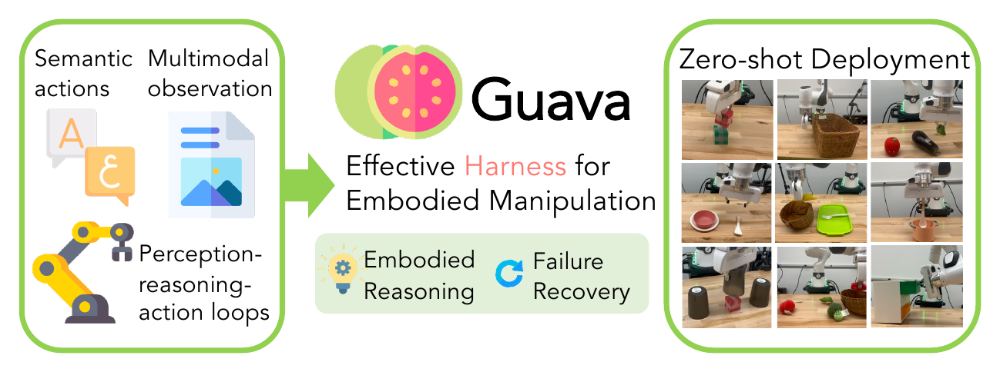
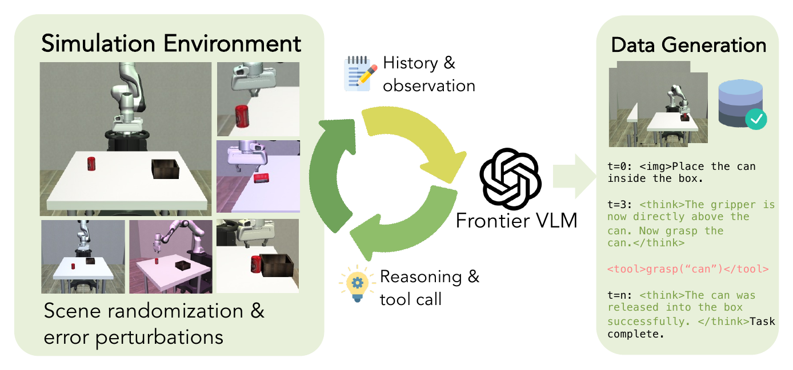
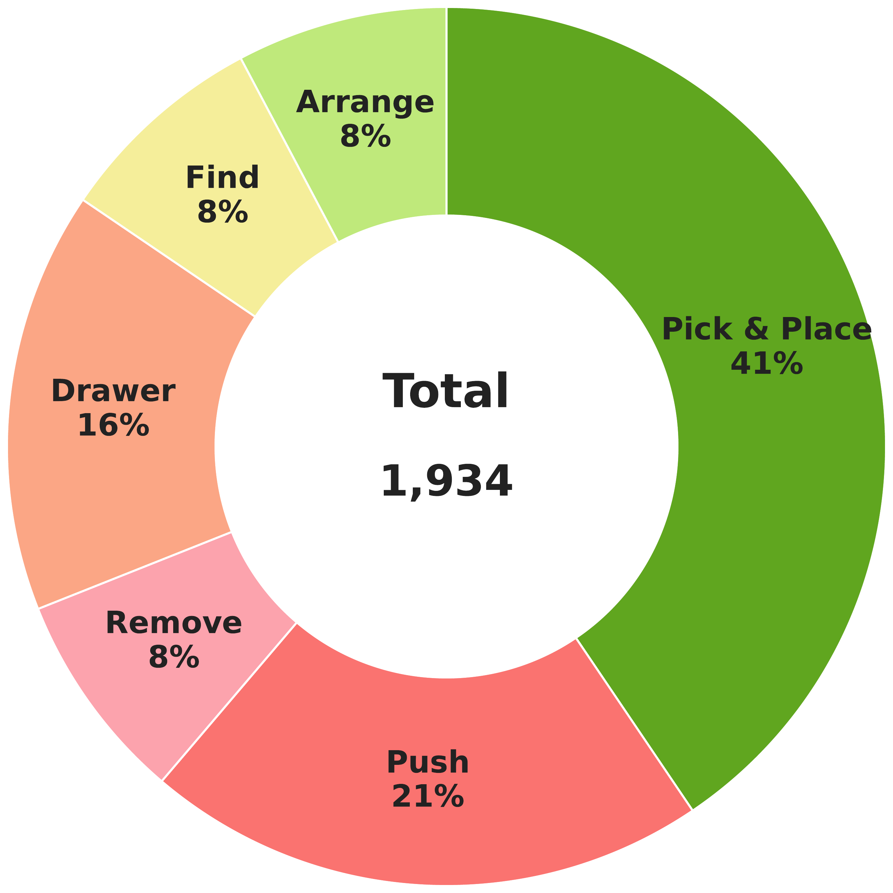
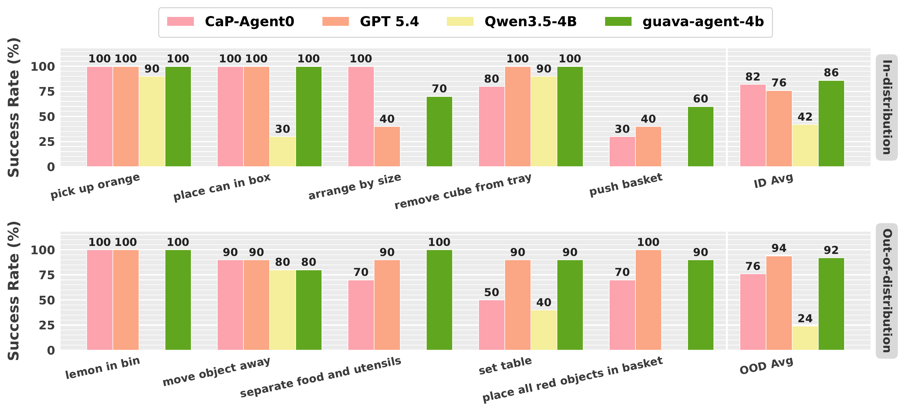
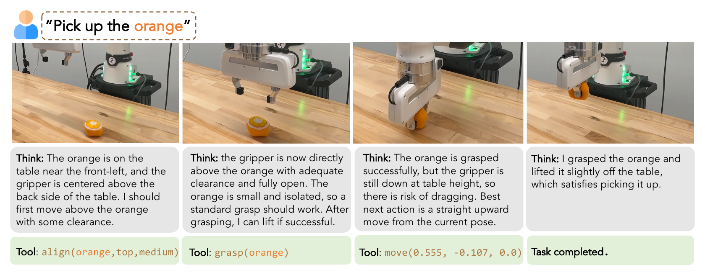
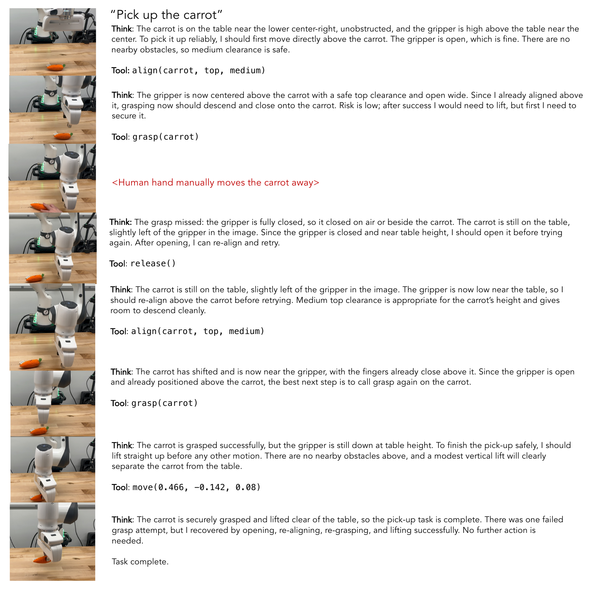

A Harness Framework for Embodied Manipulation
Guava: Effective and General Harness for Embodied Manipulation
* Equal contribution

Overview
We present Guava, a harness framework for embodied tool use. Through systematic exploration of the design space, we identify three key ingredients of an effective harness: iterative perception–reasoning–action loops, semantic action abstractions, and multimodal observations. Using this harness, we distill embodied manipulation into a 4B open-source model with fewer than 2K simulation trajectories — matching frontier proprietary models in both simulation and the real world, with strong zero-shot generalization to unseen objects, novel instructions, and long-horizon tasks.
Ingredients for an effective harness
By exploring the design space of agent workflows, action spaces, and observation spaces, we converge on three principles that consistently matter for embodied manipulation.
-
Iterative perception–reasoning–action loops
ReAct-style loops[1] let the agent adapt to execution outcomes and recover from failures, rather than committing to a single open-loop plan.
-
Semantic action abstractions
Tools that encapsulate manipulation skills at a semantic level free the language model to focus on task decomposition and planning instead of low-level control.
-
Multimodal observations
Rich visual and structured observations provide the environmental context that embodied reasoning requires.
Takeaway
Existing harness systems often rely on one-shot code generation, domain-specific pipelines, and powerful frontier models, which makes robust long-horizon behavior and failure recovery expensive and brittle. Guava reframes the design problem around three reusable ingredients.
General harness on a 4B model
Building on these principles, we ask whether an effective harness can serve as a general interface for embodied manipulation across model scales — including small open-source ones. We distill embodied tool-use behaviors into Qwen3.5-4B[2] using fewer than 2K trajectories collected entirely in simulation with Robosuite[3]. Training is two-stage: supervised fine-tuning followed by GRPO[4] on long-horizon tasks.


Results
Across simulation and real-world environments, the distilled model reaches performance comparable to frontier proprietary models. In simulation, Guava-Agent-4B achieves the highest overall success rate (75.6%), outperforming GPT-5.4[5] (70.2%) and CaP-Agent0[6] (62.7%).
| Category | CaP-Agent0 | Qwen3.5-4B | GPT-5.4 | Guava-Agent-4B |
|---|---|---|---|---|
| In-distribution | 58.9 | 16.0 | 61.3 | 82.7 |
| OOD object | 76.7 | 40.0 | 78.4 | 90.0 |
| OOD prompt | 53.4 | 16.7 | 63.4 | 83.4 |
| OOD long horizon | 58.3 | 18.3 | 76.7 | 48.3 |
| Overall | 62.7 | 23.1 | 70.2 | 75.6 |
Zero-shot transfer to the real world
The same 4B model holds onto its lead across both in-distribution and OOD real-world tasks, with no real-world training data.

Qualitative rollouts
Representative tasks executed zero-shot on a physical setup. The same 4B agent generalizes across multi-step rearrangement, sorting, and pushing.
More tasks
Additional in-distribution and out-of-distribution rollouts the same agent handles zero-shot in the real world.
Closed-loop reasoning & failure recovery
Compared with one-shot planners like CaP-Agent0, Guava interleaves observation, reasoning, and tool execution on every step — so when something goes wrong, the agent can see it and revise instead of restarting the script.

align, grasp, release, move), and visual feedback. When a grasp misses, it diagnoses the failure and re-plans rather than restarting.

References
- Shunyu Yao, Jeffrey Zhao, Dian Yu, Nan Du, Izhak Shafran, Karthik Narasimhan, Yuan Cao. ReAct: Synergizing Reasoning and Acting in Language Models. ICLR 2023. arXiv:2210.03629
- Qwen Team. Qwen3.5: Towards Native Multimodal Agents. 2026. qwen.ai/blog
- Yuke Zhu, Josiah Wong, Ajay Mandlekar, Roberto Martín-Martín, Abhishek Joshi, Soroush Nasiriany, Yifeng Zhu, Kevin Lin. robosuite: A Modular Simulation Framework and Benchmark for Robot Learning. 2020. arXiv:2009.12293
- Zhihong Shao, Peiyi Wang, Qihao Zhu, Runxin Xu, Junxiao Song, Xiao Bi, Haowei Zhang, Mingchuan Zhang, Y.K. Li, Y. Wu, Daya Guo. DeepSeekMath: Pushing the Limits of Mathematical Reasoning in Open Language Models. 2024. arXiv:2402.03300
- OpenAI. Introducing GPT-5.4. 2026. openai.com
- Max Fu, Justin Yu, Karim El-Refai, Ethan Kou, Haoru Xue, Huang Huang, Wenli Xiao, Guanzhi Wang, Fei-Fei Li, Guanya Shi, Jiajun Wu, Shankar Sastry, Yuke Zhu, Ken Goldberg, Linxi "Jim" Fan. CaP-X: A Framework for Benchmarking and Improving Coding Agents for Robot Manipulation. 2026. arXiv:2603.22435
BibTeX
Citation
BibTeX will be added once the paper is published.